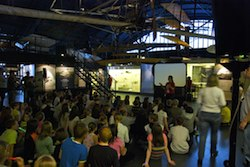
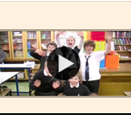

Launchpad Outreach
- 
- 
The Science Museum in London embarked upon a three year schools 'outreach' project in conjunction with the re-opening of their hands-on gallery Launchpad.
They asked us how they could best support the schools they worked with using digital technologies.
We undertook a series of research sessions with teachers in order to better understand their needs and teaching practices.
Following this research we build a simple extranet for use by the teachers and pupils who were involved in the outreach, allowing them to share their learning and to access resources.
At its conclusion, we produced a mini website for the Science Museum to showcase the project.